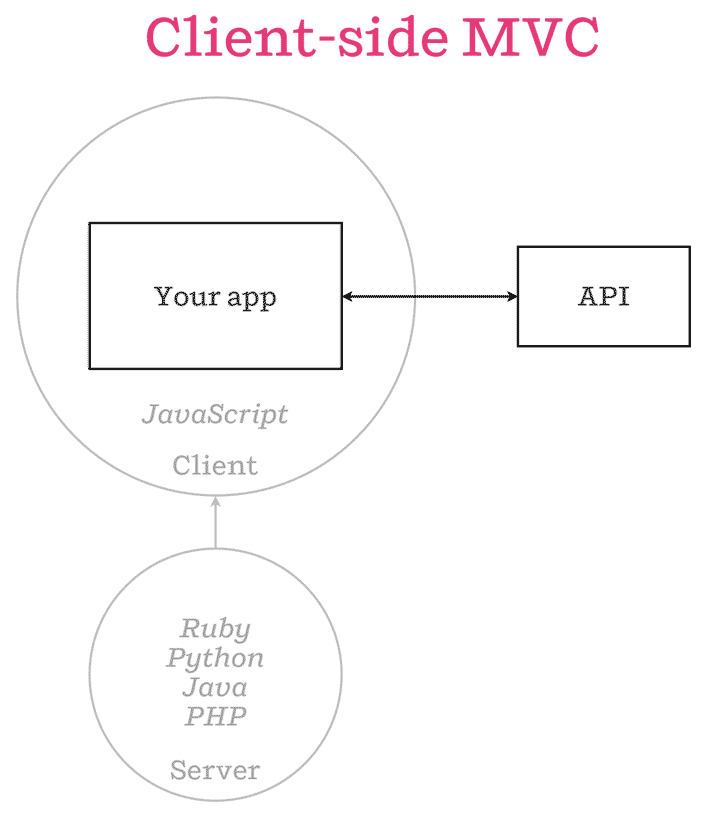
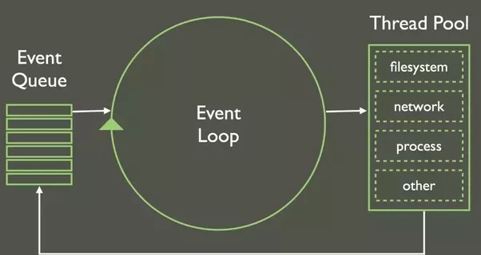

Node in Depth: Intermediate
github/henrybv

Overview
- Review: Node ecosystem
- Promises
- Express.js
- Start building
Expectations
- Good grasp of JavaScript, & have attended or watched Node Basics lecture üëç
- Please participate by answering my questions üò∫
Links
Review

- Client: makes HTTP requests
- Server: responds to HTTP requests
- Request: formatted message sent over network by a client. Contains VERB, URI (route), headers and body.
- Response: a server's reply to a request (formatted message). Contains headers, payload and status.
- Request-Response cycle: the client initiates by sending request, and server completes it by sending exactly 1 response.
Node.js
- New JS platform to run fast, scalable network applications
- Run on Chrome V8 engine
- Run on Chrome V8 engine

The Chrome V8 engine
Which companies use Node?
From leading startups to Fortune 500 companies..
But.. Why is Node.js so popular?
Typical web apps:

Single-Page Applications <--> Chrome V8 engine <-->
Isomorphic JavaScript

Dichotomy of a fullstack web app built with Node.js
But really... What is Node.js?
"Node.js is an event-driven, asynchronous/ non-blocking I/O platform"
Come again?

Let's break it down..
"Event-driven": Node callbacks are made possible by the event loop.

- "Synchronous, or blocking": code runs in sequential order. Program waits for the line of code to finish executing before moving on to the next line of code.
- "Asynchronous, or non-blocking": code does not wait for the current line to execute before moving on to run the next line.
The Event Loop

What lies under the hood?

Questions?
Node modules
A module is a set of functions or a block of code to include in your application. Node modules ~ "JavaScript libraries".
Node module demo
Before starting, we can set up a new directory and create the necessary files for this project.
Setting Up
```
$ mkdir node-greeting-app
$ cd node-greeting-app
$ touch greeting.js
$ touch main.js
```
greeting.js
We'll create a Node module in `greeting.js`. Add the following lines of code:
```JavaScript(greeting.js)
module.exports = {
greetingEnglish: function() {
console.log("Hello");
},
greetingJapanese: function() {
console.log("Konichiwa");
}
};
The `module.exports` keyword makes properties and methods available outside the module file.
main.js
The keyword `require` is used in Node to import modules. Now, `main.js` has access to the methods `greetingEnglish` and `greetingJapanese`.
```JavaScript(main.js)
const greetings = require("./greeting.js");
// "Hello"
greetings.greetingEnglish();
// "Bonjour"
greetings.greetingFrench);
```
Your first Node module
To test our module, run `node main.js` in the terminal in the `node-greeting-app` directory. You should see the following output in your terminal.
```
Hello
Bonjour
```
NPM
- The package manager for JavaScript, currently the largest software registry in the world
- Provides a way to distribute libraries or modules throughout the internet
- Makes it easy to share your custom modules and access other modules in your projects
Bloc Resources & Next Steps
NodeSchool.io quick tutorials
Aadditional foundational practice
- Learnyounode
- How to npm
- ExpressWorks
- Promise It Won't Hurt
- Async You
EXPRESS.JS
A Node library for error handling
- Treats requests as objects, created by event
- matches on VERB and ROUTE
- allows chaining of (many) handlers
- enables modular layering with "routers"
Install Express.js
npm install express (--save)
https://expressjs.com/en/starter/installing.html
Promises
npm install express (--save)
https://expressjs.com/en/starter/installing.html
Install Express.js
npm install express (--save)
https://expressjs.com/en/starter/installing.html
Install Express.js
npm install express (--save)
https://expressjs.com/en/starter/installing.html